Inauguration & Plantation
Camp ka aagaz tree plantation drive ke saath hua, jisme humne paryavaran sanrakshan ka sankalp liya.

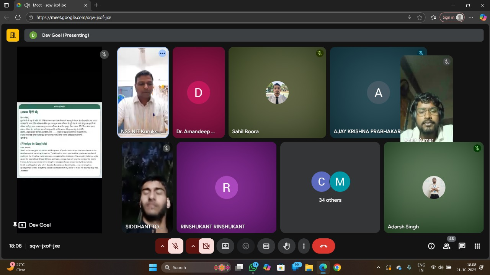
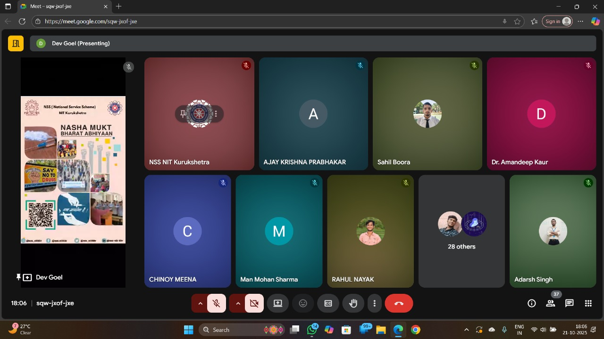
Shramdaan & Community Service
Volunteers ne gaon ke mandir aur sarvajanik sthalon par safai karke 'Sewa Hi Parmo Dharma' ka sandesh diya.

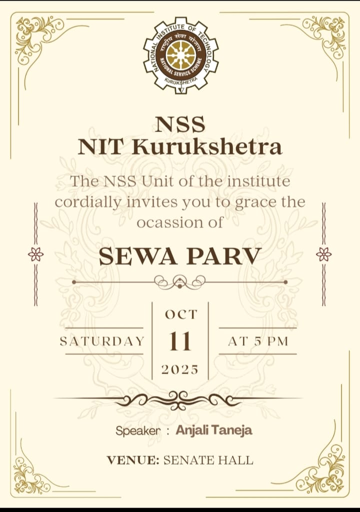
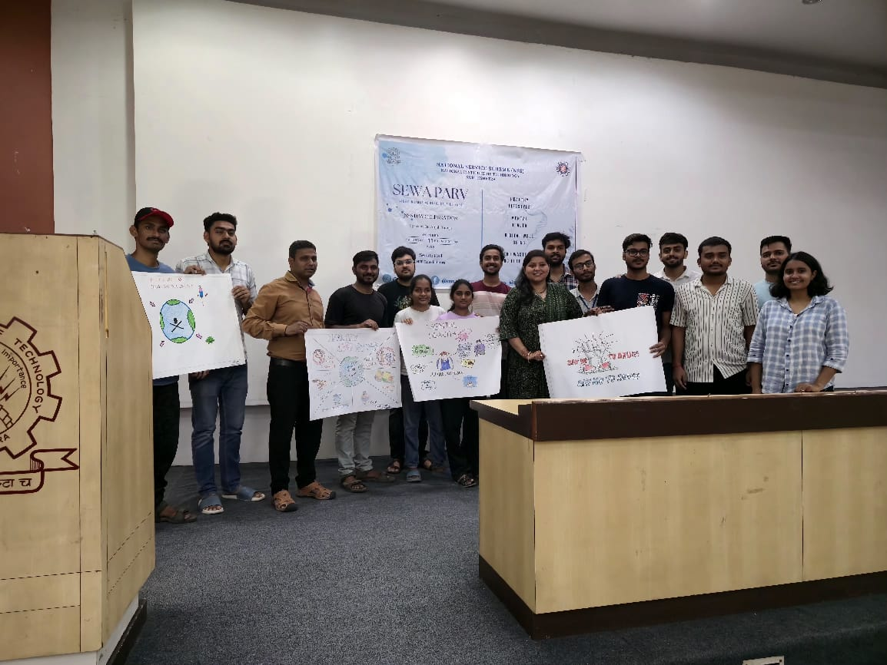
Healthy Body, Healthy Mind
Sports aur yoga sessions ke madhyam se fitness aur teamwork ko promote kiya gaya.

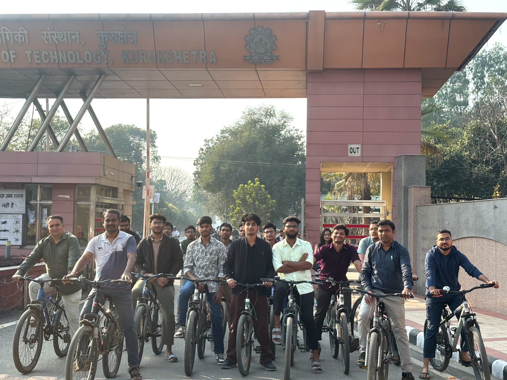
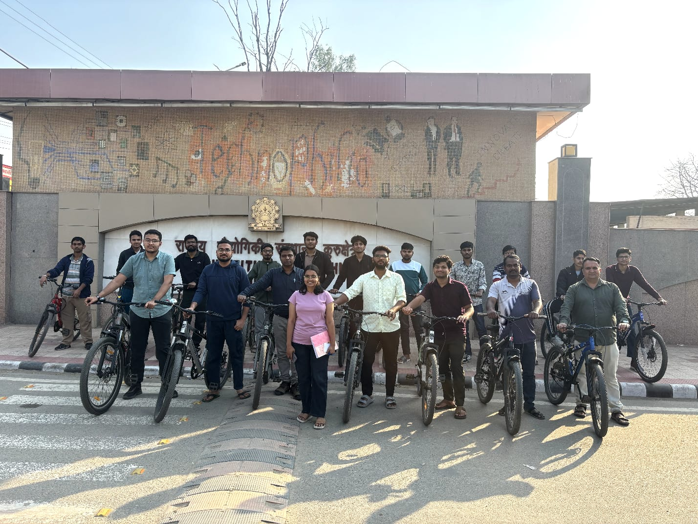
Swachhta Abhiyan Drive
Waste management aur hygiene awareness ke liye door-to-door campaign aur safai karyakram.
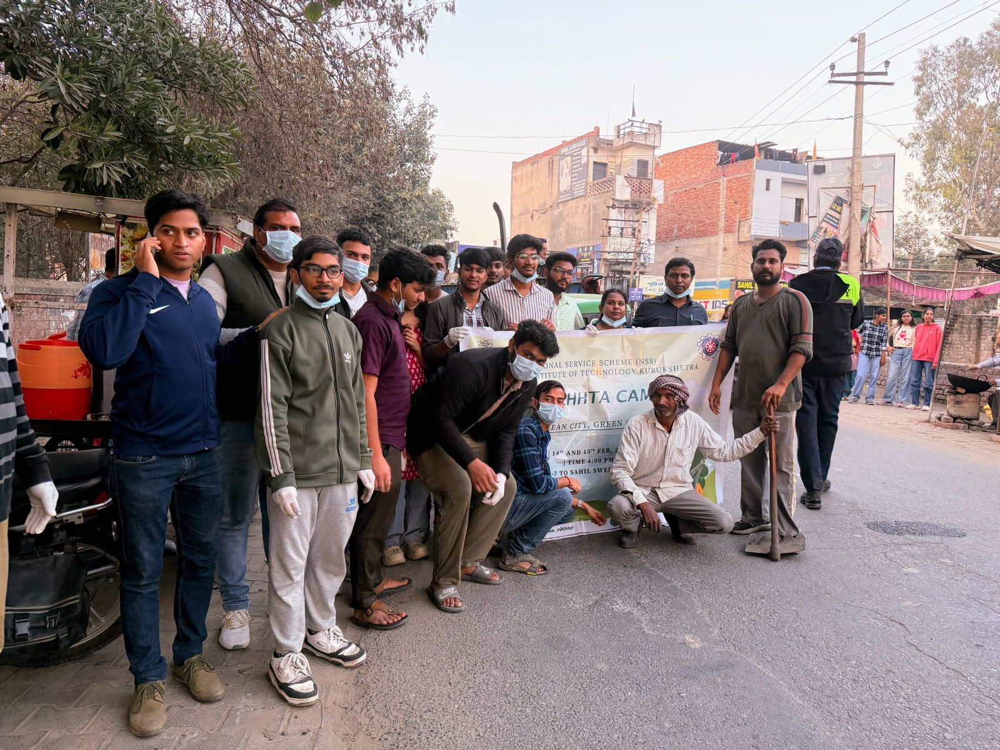
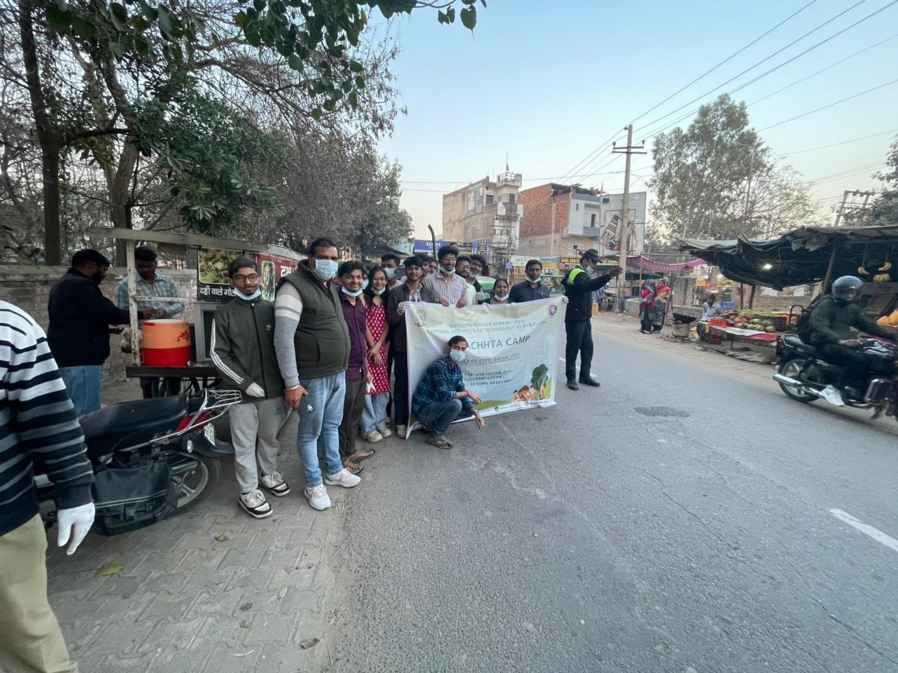
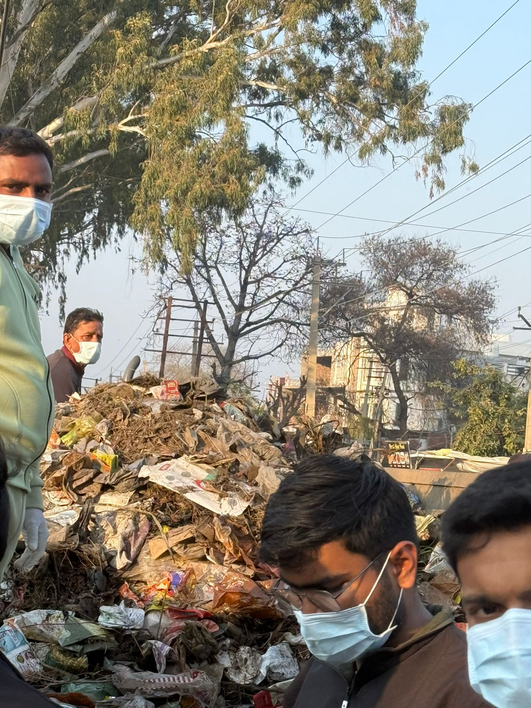
Cultural Unity & Festivals
Holi aur Vasant Panchami ka jashn gaon ke bachon aur buzurgon ke saath milkar manaya gaya.

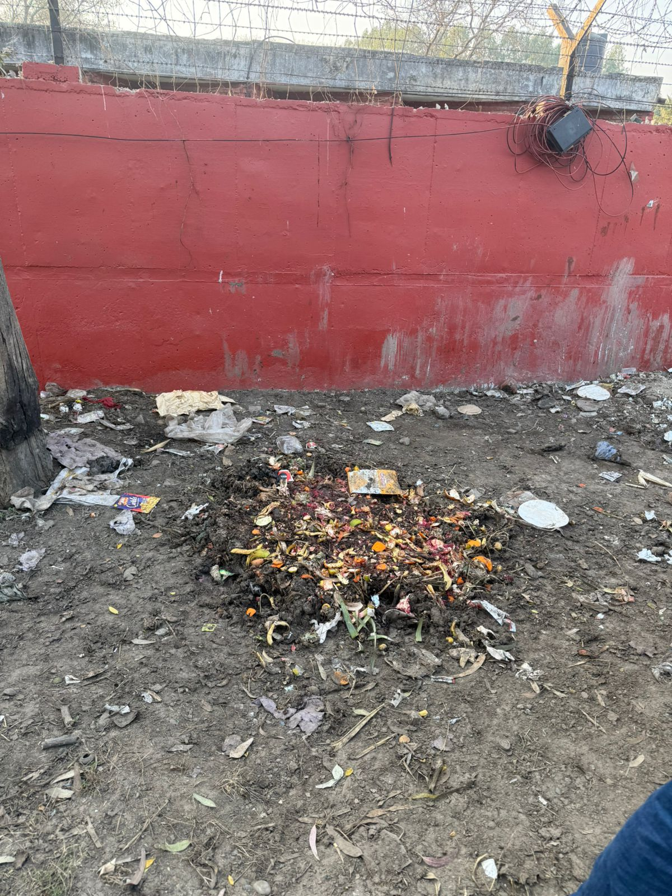
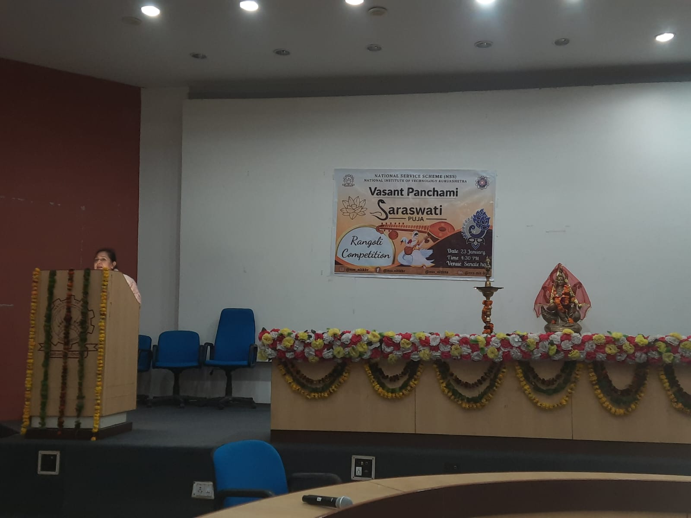
Awareness & Social Counseling
Nashamukti (Drug Awareness) aur Career Counseling par vishesh satra aayojit kiye gaye.


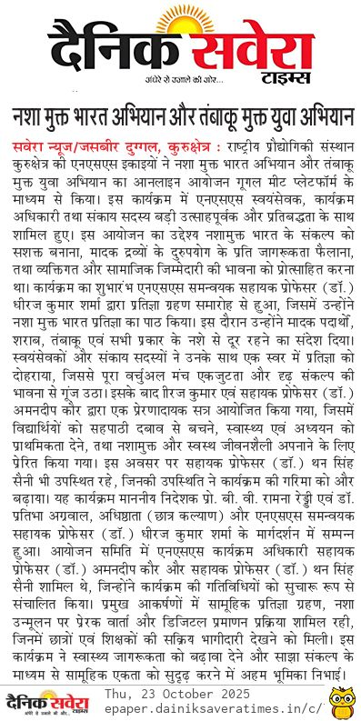
Valedictory: Journey's End
7 dino ki yaadon ko samet-te hue, camp ka समापन deshbhakti aur sanskritik prastutiyon ke saath hua.
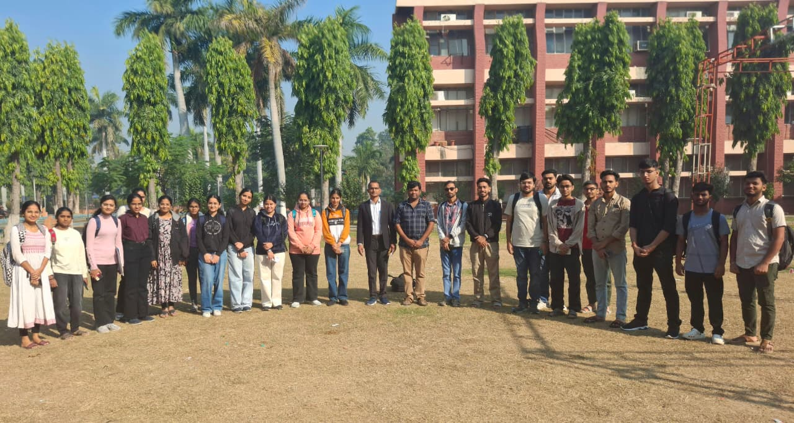
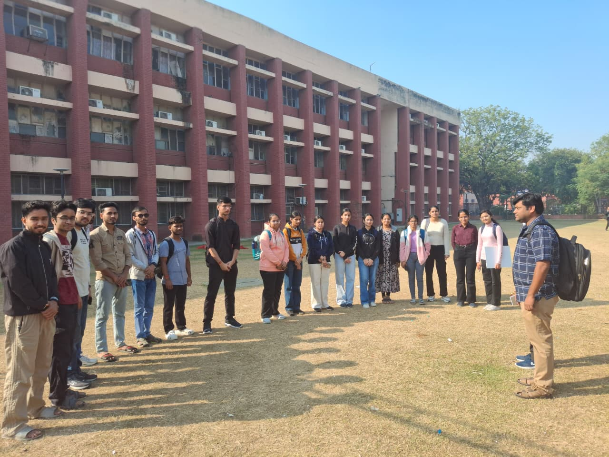
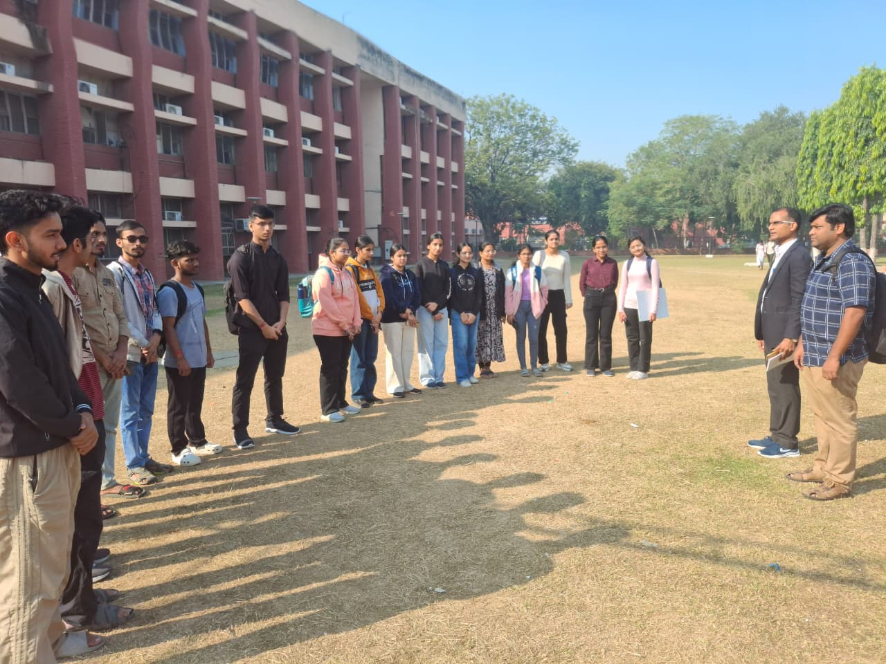